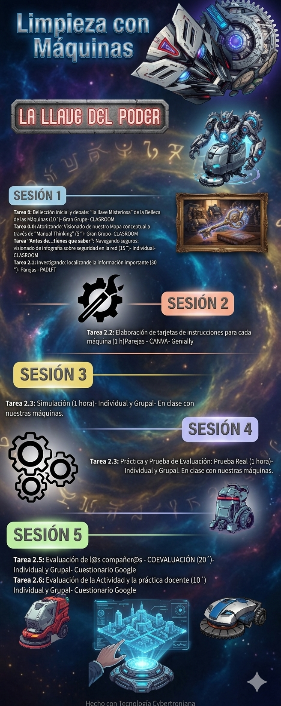

Contexto y objetivos de la tarea
Contexto de la tarea:
Durante todo el curso hemos ido manejando nuestras máquinas, aprendiendo más de lo que pensamos. Ahora toca recopilar y afianzar aquellas tareas de mantenimiento y seguridad en su uso. Lo vamos a hacer a través de 6 tareas.
En general, en esta ACTIVIDAD aprenderás a:
- Aplicar el plan de mantenimiento preventivo de las máquinas según el fabricante.
- Realizar las operaciones de preparación y mantenimiento así como de sus accesorios y herramientas para la limpieza.
- Desarrollarlo todo pero en condiciones de Prevención y Seguridad...así como con conciencia medioambiental.
Descripción de la ACTIVIDAD
A continuación te muestro el camino que vamos a seguir hasta conseguir nuestro objetivo, pasando por una serie de tareas, algunas hechas ya:
